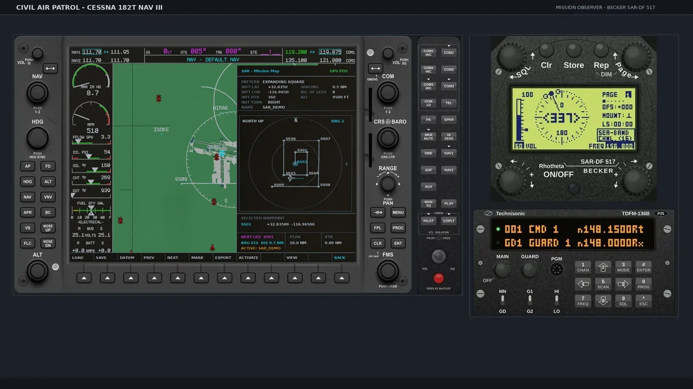
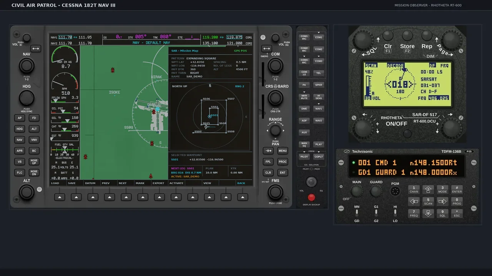
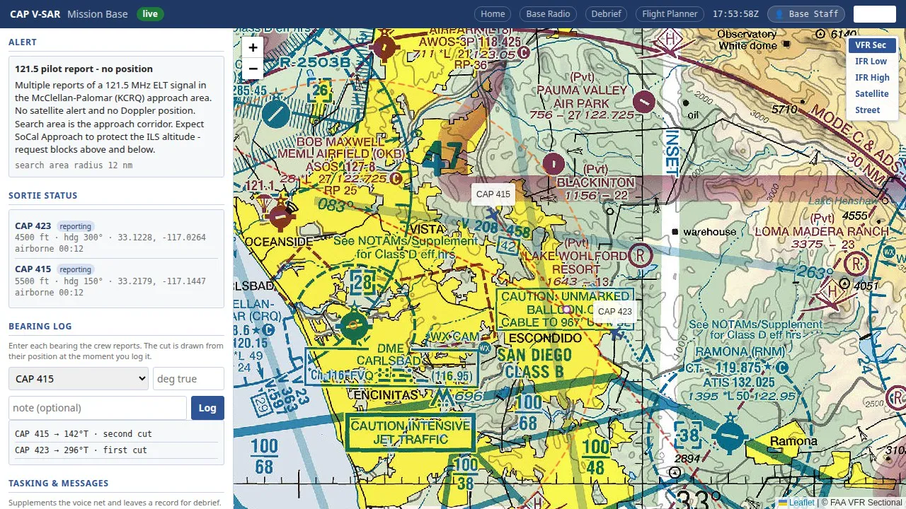
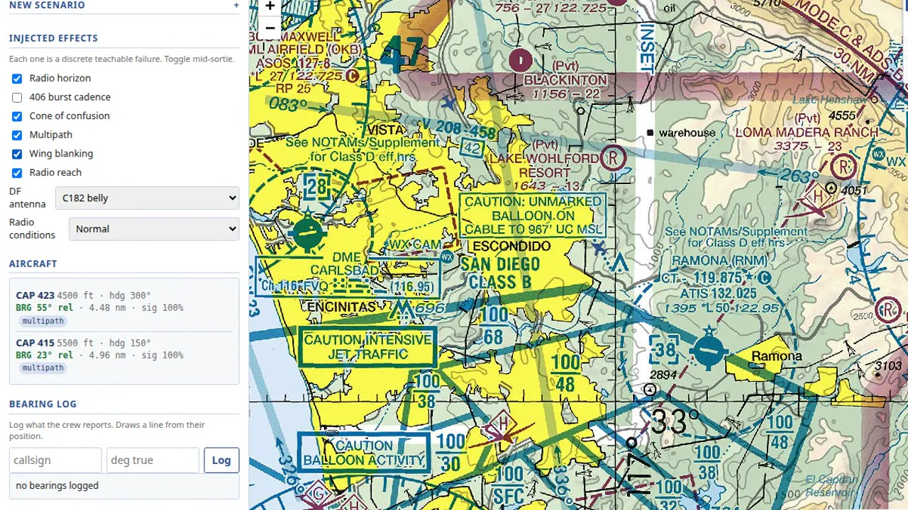
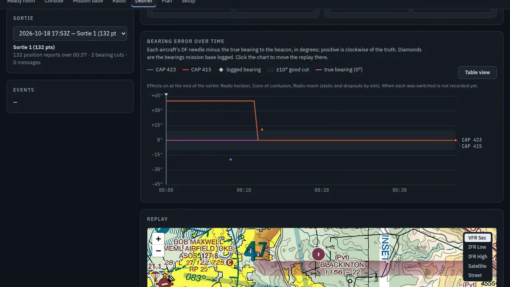

DIRECTION FINDING
The beacon lies to you a little, all the time.
A ridge between you and the ELT, the wrong wing down in a turn, a signal that exists for less than half a second every fifty seconds. Teaching a Mission Observer to read through that is most of the job, so the simulated receiver had to be wrong in the same ways the real one is wrong.
The two direction-finder heads
THE TWO HEADS
Button for button, from the manuals.
In the sample exercise, CAP 423 carries a Becker 517; CAP 415 carries the RHOTHETA RT-600, the newer of the two heads. Both are drawn from the manufacturers' manuals, button for button, and both read the same simulated signal.
| Feature | Becker 517 | RHOTHETA RT-600 |
|---|---|---|
| 121.5 / 243.0 homing | Bearing pointer and signal strength, 3 kHz DF tone | Bearing on a compass rose, dual-watch scan |
| 406 MHz | Emergency mode: one channel, 406.025. Training mode: tunable 400–410 | All 19 COSPAS-SARSAT channels in selectable groups |
| After a turn | CLR clears the bearing averaging | CLR resets the filter; a spread bar shows quality |
| Overhead | STORE silences the DF tone so you hear the raw warble peak and null; TIMEHOLD (edit menu) holds the last bearing between 406 bursts | Holds the decoded 406 bearing between bursts |
| Antenna | TOP / BOTTOM must match the airframe; wrong setting mirrors left and right | Wing blanking in a bank is an exercise effect applied to both heads; see "How the signal travels" |

The needle settles. Inbound on the beacon, the Becker 517's needle swings to center as the signal climbs.

A 406 burst, decoded. The RT-600 scans, then shows the bearing and holds it.
HOW THE SIGNAL TRAVELS
The terrain is in the simulator, so that is where the model lives.
The propagation model lives inside X-Plane, because that is the only place the real terrain is. Each update the program running inside X-Plane samples the straight path between the aircraft and the beacon, probes the simulator's own terrain at each point, and asks whether the ground pokes above the ray. Then it adds up what a real receiver would lose:
- the radio horizon, from both the aircraft's height and the beacon's;
- free-space loss for the band, with a calibrated link budget;
- terrain: 20 dB when the path grazes a ridge, up to 40 dB in deep shadow;
- the airframe: in a bank toward the beacon, the lowered wing on the beacon's side sits between a belly antenna and the signal and can shade it by up to 24 dB — the wing null CAP crews are taught to fly;
- the 406 beacon's burst: 440 milliseconds every 50 seconds, and nothing in between;
- the cone of confusion directly above the beacon, where the needle has nothing to point at;
- multipath: an intermittent false bearing the director can switch on, offset a fixed amount (40° by default) to stand in for a reflection off a ridge.
What is left decides the needle, the signal bar and the audio the observer hears.
TECHNIQUES AND TRAPS
Three ways a correct receiver gives a wrong answer.
- Fly the null. Bank toward the suspected side. With a belly antenna the lowered wing now sits between the antenna and the beacon, the signal drops, and the drop tells you which side the beacon is on.
- Passing overhead. Inside the cone the needle swings and reverses. That is not a failure. Press STORE, listen for the warble peak and null, call "overhead the beacon", and start the expanding square from that point.
- Reflections. A bearing 40° off the others is the exercise's stand-in for a reflection off the Ramona ridge. The cockpit rarely sees it; the base does, because the plotted cut disagrees with the three before it. The base asks the crew to re-fly the leg.
- TOP or BOTTOM. Set the antenna mounting to match the airframe or every left and right will be mirrored.
- 406.025, not 406.037. The Becker in emergency mode listens to one channel. Tune the exercise channel in training mode, or let the RT-600 scan.

Two cuts. Mission Base logs each aircraft's bearing from where it called it and draws the line on the map.
EXERCISE CONTROL
Nobody sees the truth until the director reveals it.
The Exercise Director places the beacon on the chart, picks the band, writes the alert the base will get, and can switch each effect on or off mid-sortie: radio horizon, 406 burst cadence, cone of confusion, multipath, wing blanking. The console shows the director what each cockpit's needle is seeing. Nobody else sees the true position until the director reveals it for debrief.

An effect, mid-sortie. The director switches on wing blanking and watches each cockpit's bearing and signal in the readout.

Scored. Closest approach, bearing error and the needle's error over time, per aircraft.